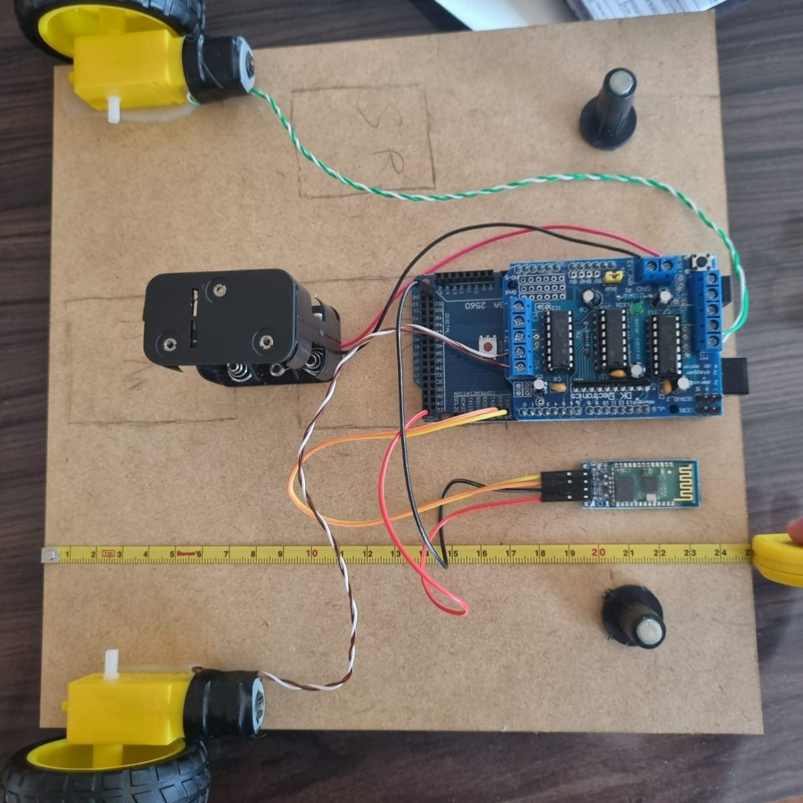
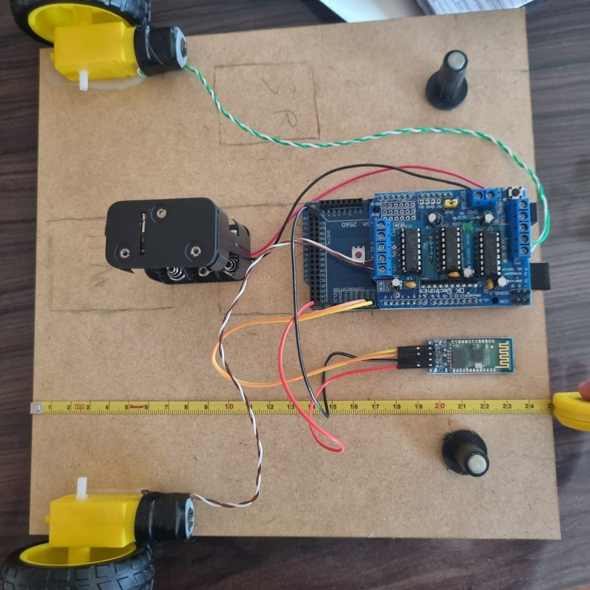

Xispirito

O Xispirito surgiu a partir da estrutura de um brinquedo clássico, o Chatter Telephone, visto no filme Toy Story, aliado à nossa criatividade. A ideia de criar um robô de batalha inspirado em um brinquedo antigo nos pareceu interessante, resultando no conceito do Xispirito: um robô de combate cuja estrutura remete à um brinquedo antigo. Essa combinação entre o design nostálgico e a funcionalidade moderna traz um toque único ao projeto, misturando a simplicidade dos brinquedos de antigamente com a sofisticação da robótica atua
Veja mais sobre o projeto


Armas
As armas do projeto consistem em "lanças" retráteis, equipadas com uma bola cheia de espinhos em suas extremidades superiores. Essas lanças são projetadas para serem ativadas por sensores, quando os sensores são acionados, as lanças se estendem rapidamente a partir das laterais do projeto, com o objetivo de atingir e perfurar o balão do adversário. Um LED de ativação estará localizado no "nariz" do projeto.

Hardware
 

Utilizamos motores DC com o driver de motor L293D, que permite o controle das rodas. O núcleo do sistema é um Arduino Mega 2560, que, em conjunto com o módulo Bluetooth HC-06, permite que os telefones celulares controlem o robô em todo o seu potencial. Os dois motores DC adicionais de 3V a 6V com eixo duplo acionarão as armas. Utilizaremos dois sensores microswitch KW11 com hastes de 56 milímetros para ativar as armas. Um LED vermelho cristalino de 3 mm (modelo TLHK-4200) estará conectado a um resistor de 4700 ohms no topo do robô. Usaremos uma fita de LED conectada a três resistores de 4700 ohms e três transistores BD135 para iluminar.
FAQ
O software escolhido para o desenvolvimento da interface de controle foi o App Inventor, uma plataforma
extremamente intuitiva que utiliza a programação por blocos, tornando o processo de criação de
aplicativos mais acessível, especialmente para iniciantes. O App Inventor permite que os desenvolvedores
construam rapidamente interfaces gráficas funcionais. Além de ser uma ferramenta educativa, o App
Inventor é ideal para projetos que exigem controle remoto de dispositivos, como o nosso robô, permitindo
a criação de comandos personalizados e a integração eficiente com a tecnologia Bluetooth
Toda a estrutura destinada a colidir com o projeto inimigo será confeccionada em MDF para garantir maior
resistência. Os acessórios do projeto serão impressos em 3D. Para a movimentação, o projeto contará com
quatro rodas: duas na frente, uma em cada lado, e duas atrás, também uma em cada lado. As rodas
traseiras impulsionarão o projeto, enquanto as dianteiras garantirão a direção. A escolha das quatro
rodas visa proporcionar uma melhor distribuição de peso, evitando que o projeto tombe facilmente.
Optamos por adotar uma estética mais divertida e inspirada em um brinquedo, o Chatter Telephone, para
nos destacarmos dos outros projetos. Ao fazer isso, oferecemos um diferencial em relação aos outros
projetos, que tendem a ter uma estética mais focada em combate ou guerrilha. Acreditamos que essa
abordagem lúdica contrasta de forma interessante com a atmosfera de combate do evento, o que torna nosso
projeto mais único e memorável.